Tus 5 sistemas
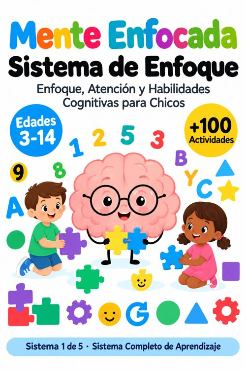
Sistema 1 de 5Sistema de Enfoque
100 fichas de atención, memoria, formas, secuencias, trazos, colores y coordinación.
Abrir · 106 páginas →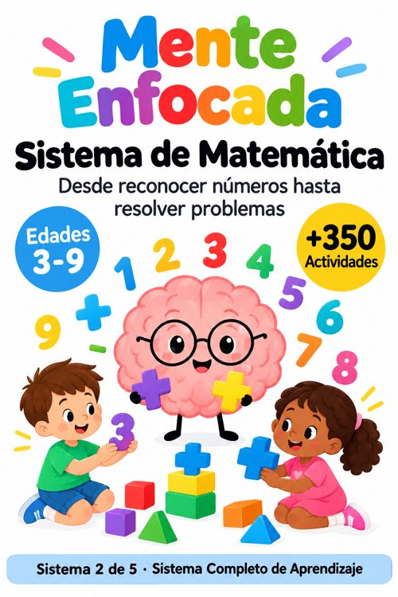
Sistema 2 de 5Sistema de Matemática
350 fichas: de reconocer los números a resolver problemas (3 a 9 años).
Abrir · 360 páginas →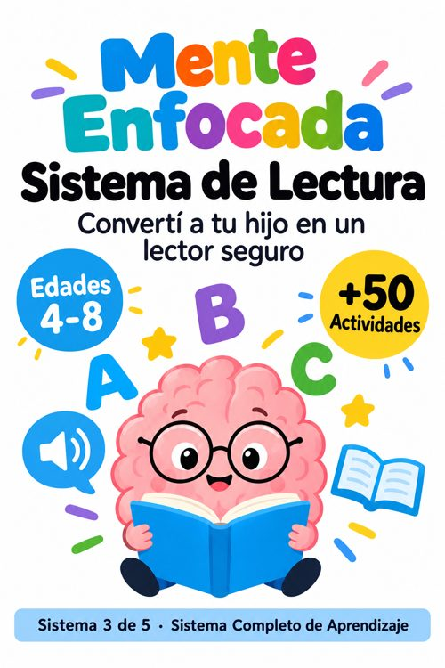
Sistema 3 de 5Sistema de Lectura
50 fichas: vocales, sílabas, palabras, oraciones y comprensión (4 a 8 años).
Abrir · 55 páginas →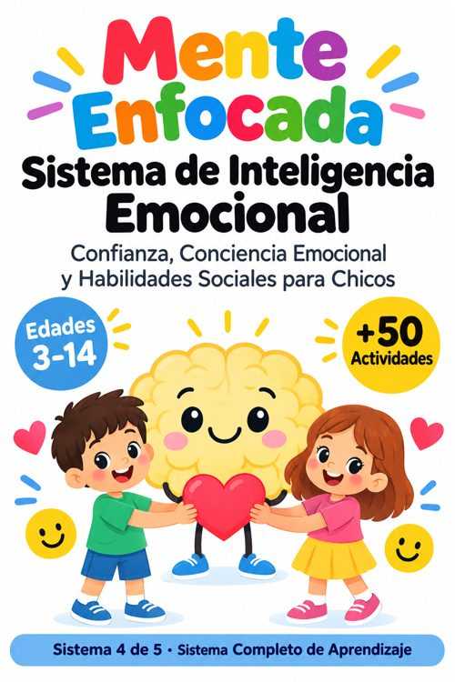
Sistema 4 de 5Sistema de Inteligencia Emocional
50 fichas para reconocer lo que siente, calmarse y llevarse bien con los demás.
Abrir · 55 páginas →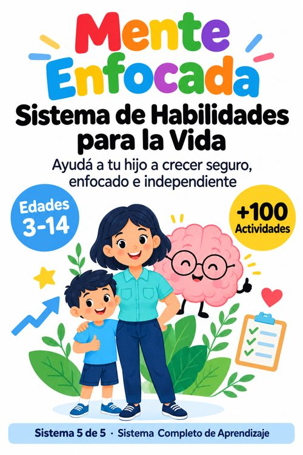
Sistema 5 de 5Sistema de Habilidades para la Vida
100 fichas de rutinas, orden, seguridad, dinero, tiempo, cocina y convivencia.
Abrir · 106 páginas →Tus 14 bonos de regalo
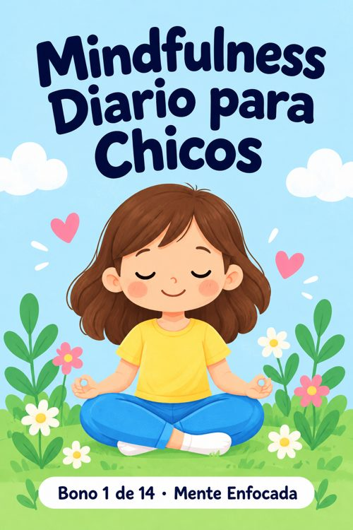
Bono 1Mindfulness Diario para Chicos
10 prácticas cortas de calma y un desafío de 30 días.
Abrir · 14 páginas →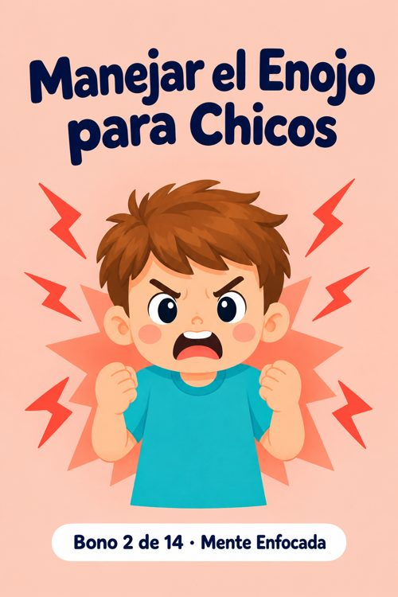
Bono 2Manejar el Enojo para Chicos
Herramientas para reconocer el enojo y calmarlo sin lastimar a nadie.
Abrir · 14 páginas →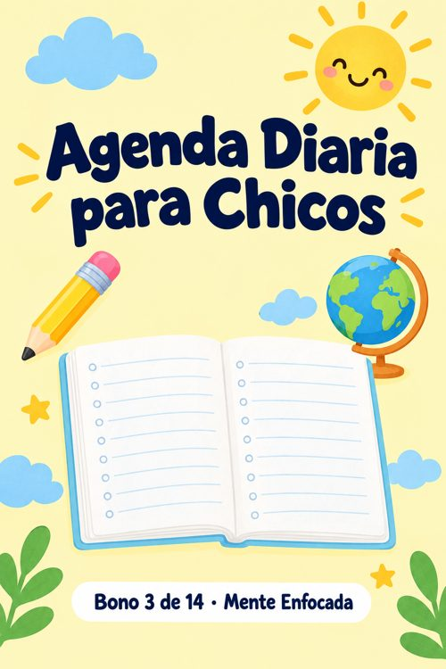
Bono 3Agenda Diaria para Chicos
Metas, calendario, horario escolar, páginas diarias y tracker de hábitos.
Abrir · 14 páginas →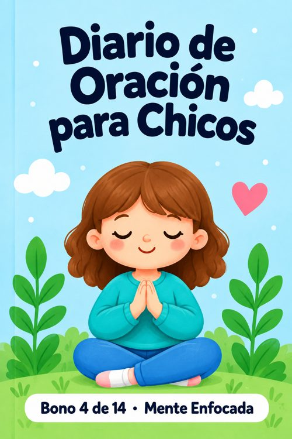
Bono 4Diario de Oración para Chicos
Oraciones de la mañana y de la noche, y páginas para escribir las propias.
Abrir · 15 páginas →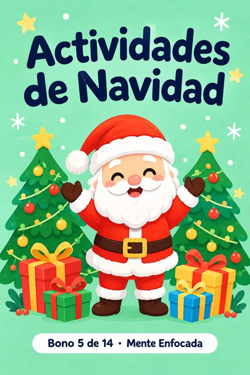
Bono 5Actividades de Navidad
5 dibujos para colorear, laberinto, sopa de letras, carta y calendario de adviento.
Abrir · 14 páginas →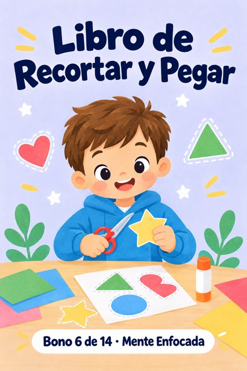
Bono 6Libro de Recortar y Pegar
Sombras, clasificaciones, historias para ordenar y figuras para armar.
Abrir · 12 páginas →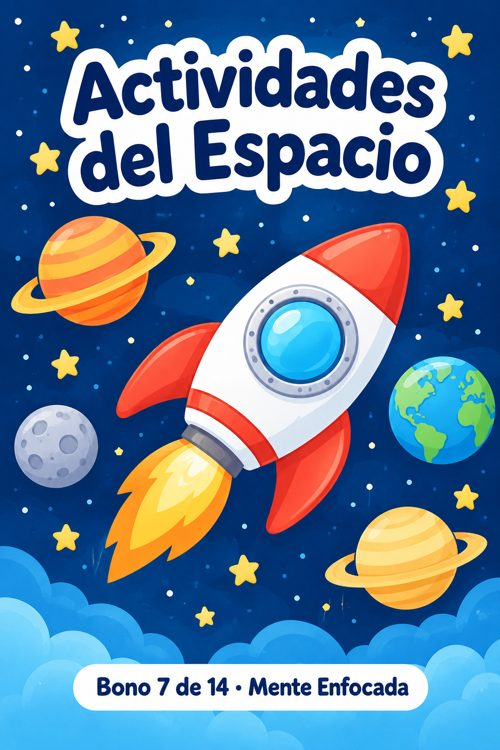
Bono 7Actividades del Espacio
Los 8 planetas, 4 dibujos para colorear, laberinto y diario de la Luna.
Abrir · 14 páginas →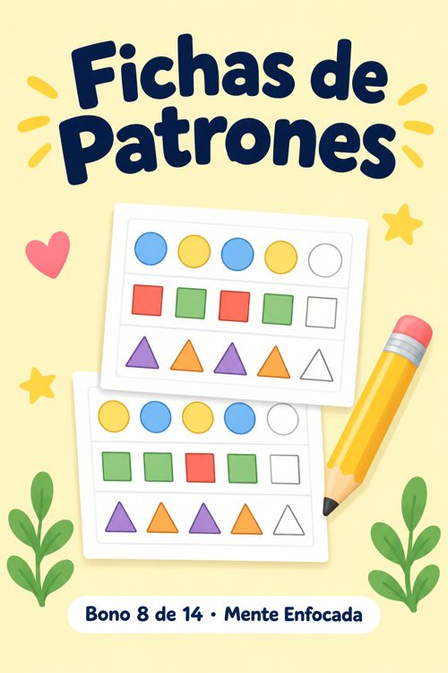
Bono 8Fichas de Patrones
Trazos de pre-escritura, guardas, collares, mosaicos y cuadrículas.
Abrir · 14 páginas →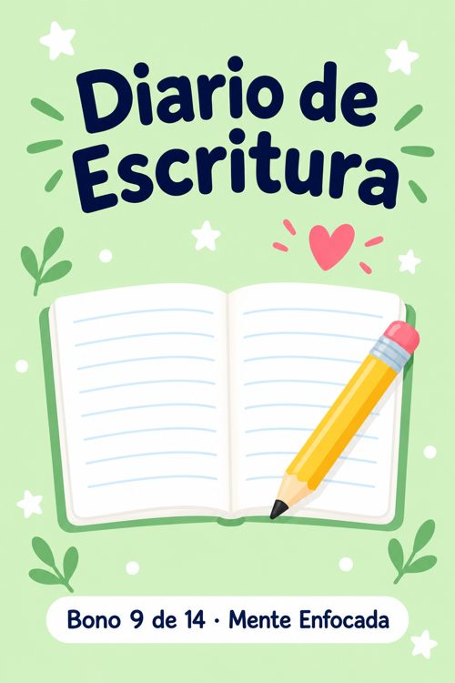
Bono 9Diario de Escritura
12 consignas creativas y una guía para escribir su propio cuento.
Abrir · 18 páginas →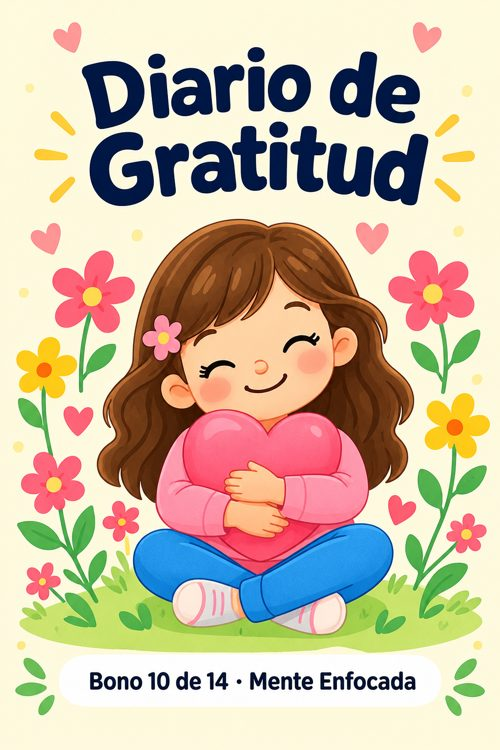
Bono 10Diario de Gratitud
8 semanas de gratitud, frasco, carta y alfabeto de la gratitud.
Abrir · 14 páginas →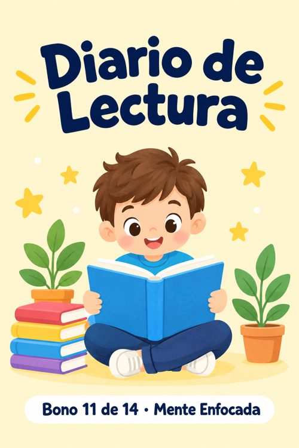
Bono 11Diario de Lectura
Registro de libros, fichas de lectura, bingo lector y palabras nuevas.
Abrir · 12 páginas →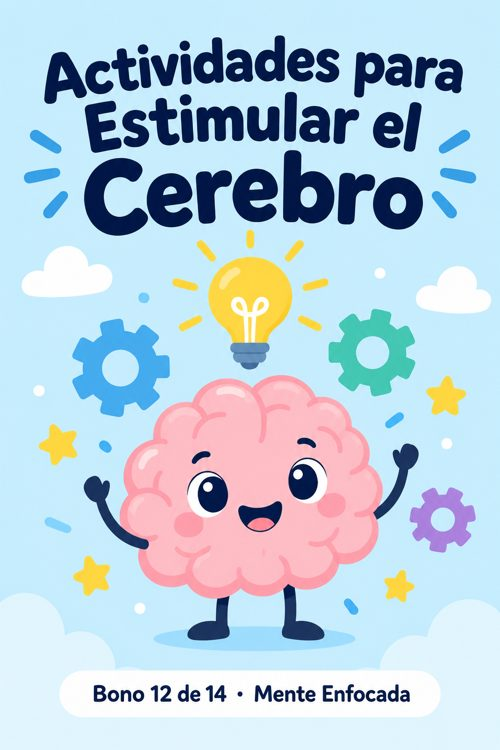
Bono 12Actividades para Estimular el Cerebro
Sudokus, sopas de letras, adivinanzas, laberinto y mensaje secreto.
Abrir · 11 páginas →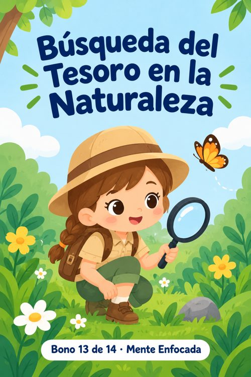
Bono 13Búsqueda del Tesoro en la Naturaleza
Búsquedas, bingo, calcado de hojas y diario del explorador.
Abrir · 12 páginas →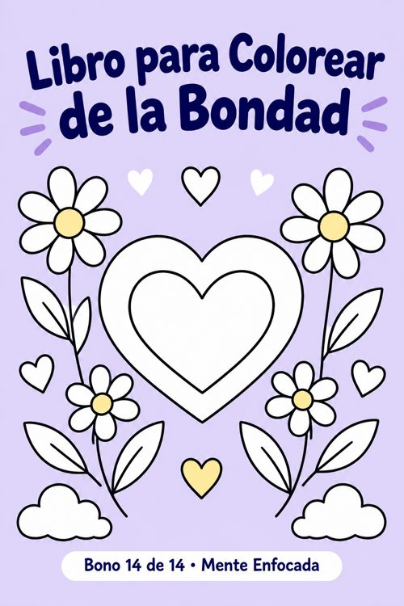
Bono 14Libro para Colorear de la Bondad
12 escenas de bondad para colorear y una semana de buenas acciones.
Abrir · 16 páginas →Por dónde empezar
- Empezá por el Sistema de Enfoque, Nivel 1: una ficha por día, 10 minutos.
- Sumá un segundo sistema según la edad: Matemática (3 a 9 años) o Lectura (4 a 8 años).
- Usá Emociones y Habilidades para la Vida cuando aparezca el tema en casa.
- Los bonos son para cuando quieran: agenda, diarios, colorear y actividades especiales.
- Imprimí en A4. Podés volver a imprimir todo las veces que quieras.
Novedades
Para uso personal. Prohibida la reventa o redistribución.